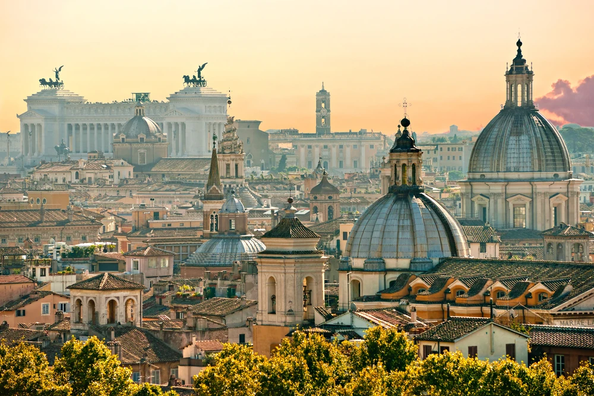

ITALY

Whether you’ve already been, or are planning a trip to Italy, you won’t be disappointed. There is pretty much everything for everyone here. Italy is also home to the most UNESCO World Heritage cultural sites, more than any other country.
Italian food, beaches, sights and shopping will make any trip to Italy a success. Let’s not forget about fashion. Italy oozes in it. Let’s take a look at all the reasons to visit Italy. You might even find yourself coming back again and again.
The Romans built their vast empire here and ruled the Mediterranean for centuries. However, many other civilizations have also made their home here. The Etruscans and Samnites flourished long before the Romans conquered them. The Phoenicians, Arabs and the Greeks established settlements and colonies, some still surviving today. Then came the rule of the Roman Catholic church from its seat of power at the Vatican.
When you visit Italy today, you will note cultural differences all over the country. That’s because this was home to several important maritime republics. The better known – Venice, Genoa, Pisa and Amalfi – might seem familiar destinations today. Others were lesser-known but just as important.
